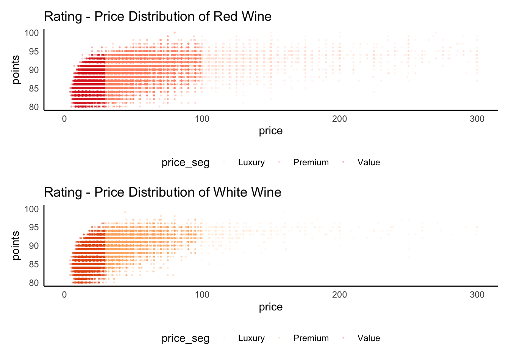
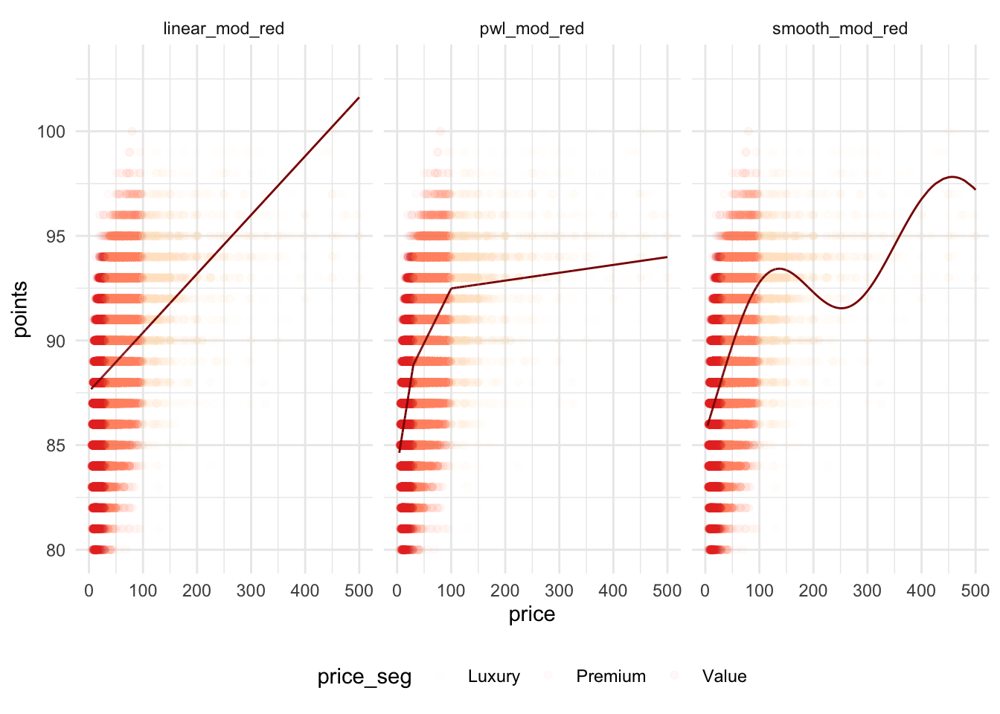
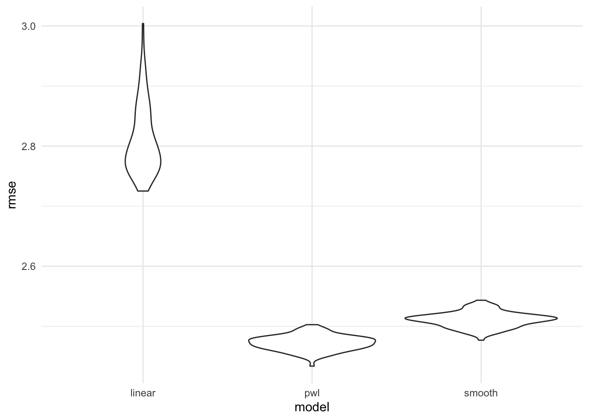
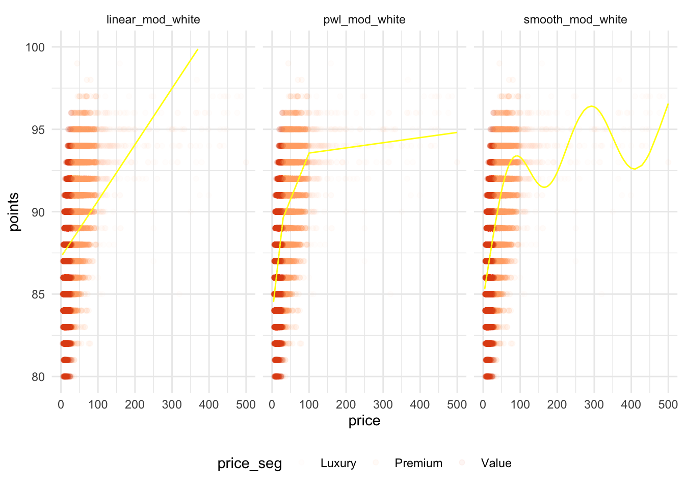
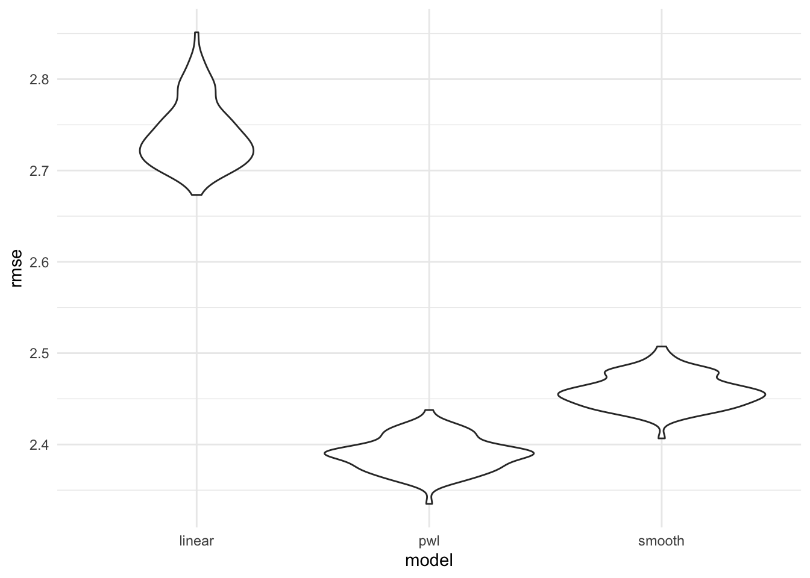

Let’s take a deeper look into the price and rating of red wines and white wines. The goal is to fit proper linear models that better describe:
Price and Rating: what’s the best model for their relationship?
Predictors of the rating of a bottle of wine - for red and white wines
red_df =
read_csv("./wine_data/tidy/wine_red.csv") %>%
select(-X1) %>%
drop_na(price) %>%
mutate(price_seg = case_when(price < 30 ~ "Value",
30<= price & price <100 ~ "Premium",
price >=100 ~ "Luxury"),
price_seg = as.factor(price_seg))
white_df =
read_csv("./wine_data/tidy/wine_white.csv") %>%
select(-X1) %>%
drop_na(price) %>%
mutate(price_seg = case_when(price < 30 ~ "Value",
30<= price & price <100 ~ "Premium",
price >=100 ~ "Luxury"),
price_seg = as.factor(price_seg))red_df_reg =
red_df %>%
filter(year>=2000) %>%
mutate(
bold = str_detect(description, "bold"),
tannin = str_detect(description, "tanni"),
dry = str_detect(description, "dry"),
acidity = str_detect(description, "acidi"),
full_body = str_detect(tolower(description), paste(c("full body", "full in body"),collapse = '|')),
price_cp1 = (price > 100) * (price - 100),
price_cp2 = (price < 30) * (price - 30)
)
white_df_reg =
white_df %>%
filter(year>=2000) %>%
mutate(bold = str_detect(description, "bold"),
sweet = str_detect(description, "sweet"),
acidity = str_detect(description, "acidi"),
price_cp1 = (price > 100) * (price - 100),
price_cp2 = (price < 30) * (price - 30))There has been a lot of ongoing discussion about the value behind the price tag of a bottle of wine. We usually believe that the more expensive wines are of better quality, but is that always true? Is the positive correlation can be further interpreted as a simple linear relationship?
The price of wine ranges from value purchase to luxury. The picture summary below shows a general price segmentation of wine. For more information, we highly recommend this article from Wine Folly provides more comprehensive discussion about price and quality.
In the analysis of our dataset, we segmented the wine price at two cutoffs - $30 and $100. The price distribution of red and white wine prices is shown below.
For more detailed distribution, please zoom in.
red_df %>%
group_by(price, price_seg) %>%
summarize(n = n()) %>%
plot_ly(x = ~price, y = ~n, color = ~price_seg, type = "bar", colors = "Reds")For more detailed distribution, please zoom in.
white_df %>%
group_by(price, price_seg) %>%
summarize(n = n()) %>%
plot_ly(x = ~price, y = ~n, color = ~price_seg, type = "bar", colors = "Oranges")Bearing this general picture of the price distribution in mind, let’s visit the relationship between wine price and rating. We have decided to focus on wine that was produced after year 2000, as these wines are more likely to be the ones people have access to in wine shops.

To better capture the relationship between wine price and points, we aim to fit different models and pick the best one using cross validation. The three candidate models are:
Simple linear model
Piecewise linear model using the $30 and $100 cutoff
Smooth model

Cross Validation: fit models and obtain RMSEs to select the best model

Simple linear model - Red Wine
| AIC |
|---|
| 329236.5 |
Piecewise Model - Red Wine
| AIC |
|---|
| 311640.4 |
Smooth Model - Red Wine
| AIC |
|---|
| 313753.3 |
Using AIC as a measure for Goodness of Fit, we choose the Piecewise Model.
| term | estimate | p.value |
|---|---|---|
| (Intercept) | 87.2770108 | 0 |
| price | 0.0521123 | 0 |
| price_cp1 | -0.0483637 | 0 |
| price_cp2 | 0.1097418 | 0 |

Cross Validation: fit models and obtain RMSEs to select the best model

Simple linear model - White Wine
| AIC |
|---|
| 158477.6 |
Piecewise Model - White Wine
| AIC |
|---|
| 147768.8 |
Smooth Model - White Wine
| AIC |
|---|
| 148518.8 |
Using AIC as a measure for Goodness of Fit, we choose the Piecewise Model.
| term | estimate | p.value | exp(estimate) |
|---|---|---|---|
| (Intercept) | 87.2770108 | 0 | 8.015381e+37 |
| price | 0.0521123 | 0 | 1.053494e+00 |
| price_cp1 | -0.0483637 | 0 | 9.527872e-01 |
| price_cp2 | 0.1097418 | 0 | 1.115990e+00 |
Based on the coefficient estimates of the piecewise model, the model is actually revealing the truth behind the price - rating change trend. Among the Value Wines, the slope is the highest and the response of increase in rating points to a unit price change is the most sensitive. When it comes to Premium Wines, the rating change is less sensitive as the wine of this price segment is, to some extent, of satisfactory rating in the first place. In Luxury Wines, however, the estimated slope value is close to 0, and it’s true that among the luxury segment the price demonstrate more of a branding effect of some wineries rather than providing much information of the wine quality itself.
Among the value wine segment, paying more is very likely to enjoy a better bottle of wine
Among the premium wine segment, you’ll still get better quality wine with higher price, but the value of extra money spent is less apparent as compared to the value segment.
Among the luxury wine segment, don’t rely too much on the price tag to expect for a better bottle of wine. Better choice would be study its reviews for more informative decision.
The goal for this part of regression analyses is to connect the rating with information about a bottle of wine. Price Segment and key taste notes are used as predictor variables in this section.
For red wine, predictor variables are:
price_seg: Price segment, as described in the previous part of analyses.
old_world and new_world: two dummy variables coded based on the country listed on Wine Folly. If neither is true then it refers to the reference category - other.
The following binary variables are identified by the key description scale from Vivino - also highly recommend to install the Mobile App to know more about the wine before purchasing.
Bold: TRUE if contains description of boldness.
Tannin TRUE if contains description of tannic-related words.
Dry TRUE if contains description related dryness.
Acidity TRUE if contains description related to acidic taste.
full_body TRUE if contains description related to full body.
| term | estimate | p.value |
|---|---|---|
| (Intercept) | 92.02883 | 0.00000 |
| price_segPremium | -2.56897 | 0.00000 |
| price_segValue | -5.39814 | 0.00000 |
| boldTRUE | 0.93039 | 0.00000 |
| tanninTRUE | 0.41225 | 0.00000 |
| dryTRUE | -0.58747 | 0.00000 |
| acidityTRUE | 0.25555 | 0.00000 |
| full_bodyTRUE | 0.55476 | 0.00006 |
| old_worldTRUE | 0.38396 | 0.00000 |
| new_worldTRUE | 0.13767 | 0.00165 |
The premium segment is, on average 2.56 pts lower than the luxury segment; while the value segment 5.40 points lower than the luxury on average.
Bold, tannin, acidity and full body are the key words for higher rating as compared to without these key words. While dry is the key words that has lower average rating comparing to without this word. This is generally true based on wine notes knowledge, but the mean difference of the dry word is open to argument as some wine tasters are leaning toward dry as a sign of better quality.
The old world wines are, on average 0.38 pts higher than the unidentified category, while the new world wines are 0.14 pts higher than the unidentified category.
For white wine, predictor variables are:
price_seg: Price segment, as described in the previous part of analyses.
old_world and new_world: two dummy variables coded based on the country list by Wine Folly. If neither is true then it refers to the reference category - other.
Bold: TRUE if contains description of boldness.
Sweet TRUE if contains description related sweetness.
Acidity TRUE if contains description related to acidic taste.
| term | estimate | p.value |
|---|---|---|
| (Intercept) | 93.81040 | 0.00000 |
| price_segPremium | -3.07416 | 0.00000 |
| price_segValue | -6.27041 | 0.00000 |
| boldTRUE | 0.64070 | 0.00000 |
| sweetTRUE | -0.46648 | 0.00000 |
| acidityTRUE | 0.20605 | 0.00000 |
| old_worldTRUE | -0.18716 | 0.00014 |
| new_worldTRUE | -0.42866 | 0.00000 |
The premium segment is, on average 3.07 pts lower than the luxury segment; while the value segment 6.27 points lower than the luxury on average.
Bold and acidity are the key words for higher rating as compared to without these key words. While sweet is the key words that has lower average rating comparing to without this word. This is generally true for white wines without much space for argument.
The old world wines are, on average 0.19 pts lower than the unidentified category, while the new world wines are 0.43 ptts lower than the unidentified category. This wasn’t expected, but still reasonable because red wines are the wine tpyes where the country of origin is way more heavily discussed and compared, while discussion of white wine is less focused on the old vs new world comparison.
There are several large limitations to this analysis:
Year: Although there is a general perception that the certain older wines are better, but that does not always hold true. We omitted year as a predictor in the final multivariate model for two reasons. First, a linear relationship using year as a continuous variable is not appropriate to discribe the association between wine rating and year. Besides, the dataset does not provide information on when the wine rating is generated, which is sucpectable to bias when assessing the association.
Word Descriptions: Due to the limited information of the tasting notes of a bottle of wine in our dataset, we could only simply the word identification process and chose the 3-5 key words used in the vivino app. To better understand the wine rating and incorporating more information about the tasting notes, more reviews are needed. This model provides only a basic sense of certain notes correspond to higher rating.
Old vs New World: Since there is no comprehensive list of countries that categorize all wines, we relied on the best possible list by Wine Folly. However, there could be wines that belong to either new or old world that are currently categorized as other (reference group).
Price: In the multivariate model, we used price segmentation rather than price as a continuous variable to fit the model. The categorization is the appropriate method to better describe the rating outcome, but only segmenting into three categories could be over-simplifying the true and complicated real world business indications.
Missing Data: There were 4990 in the red wine dataset and 2563 in the white wine dataset.